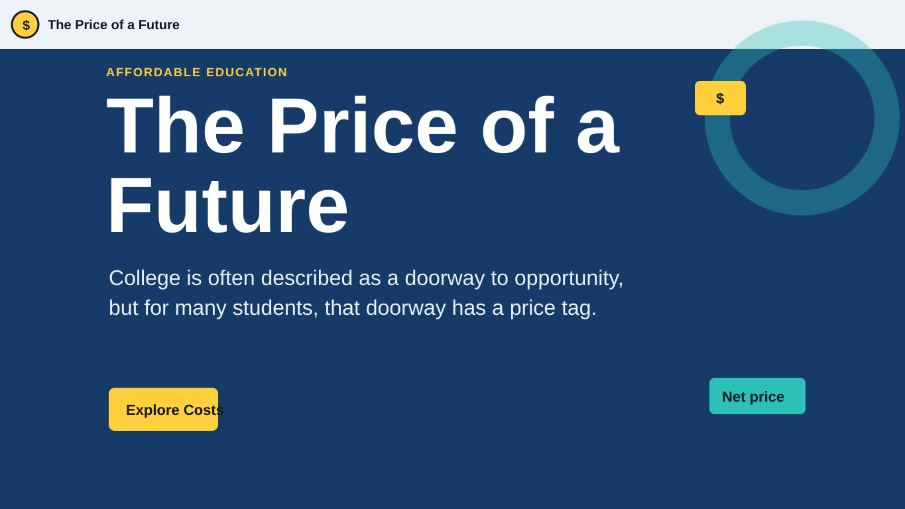

Project: Interactive Work
The Price of a Future
An interactive project about affordable education, tuition growth, student debt, and practical actions students can take.
Challenge
Turn a large societal issue into something understandable, personal, and interactive.
How I solved it
I used a tuition explorer, debt calculator, student personas, and action cards to connect data with real decisions.